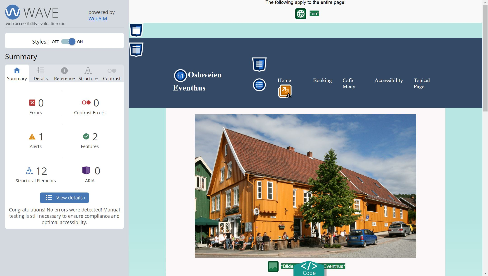
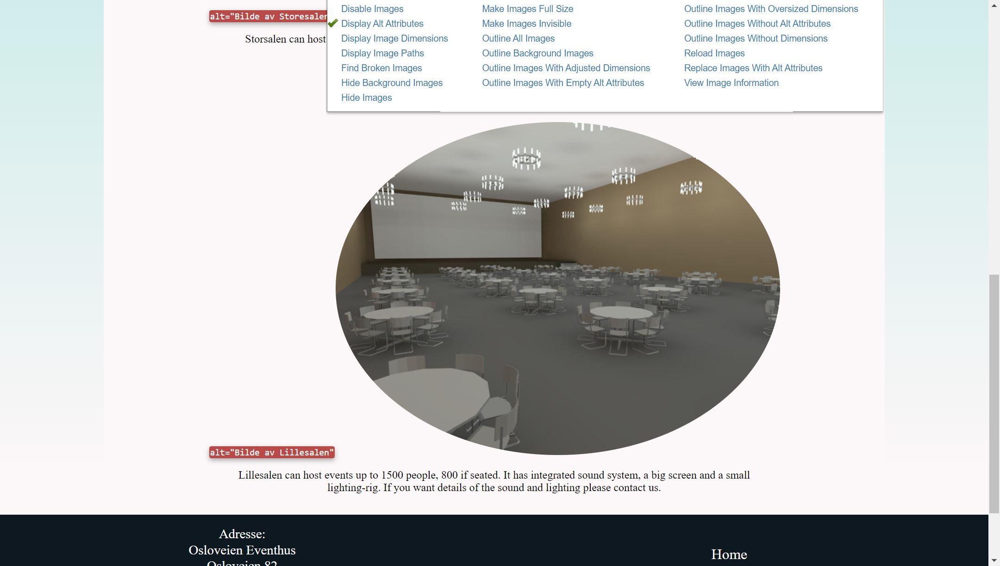
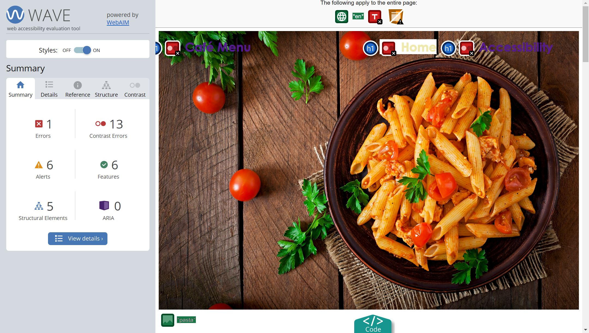
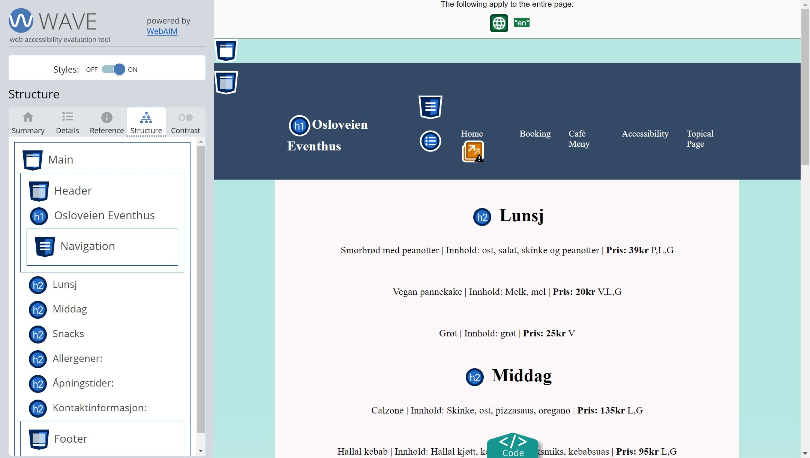

Short presentation of accessibility
We ran our website through the WAVE Web Accessibility Evaluation Tool and others to identify problem areas in regards to accessibility. In relation to screen readers we identified problems relating to language and structure. We tried to solve this by ensuring that the language was declared on every page and by better utilizing semantic markups across our code. We also used the screen reader browser plugin, provided by Google, to do further testing, to ensure that our content was accessible. Although, we could’ve gone further by implementing ARIA (Accessible Rich Internet Applications) to provide more meaning to our content.
We strive to stay true to our goal of universal design. Our steps towards this was making sure that the website is styled sparingly with blue colors, ensuring that contrast is sufficient, but also using alternative text on pictures and/or illustrations, and using headlines consecutively. Our website is universally designed to appear coherent with a common theme, excluding the topical page, which was supposed to be visually different.
To ensure accessibility beyond automatic tests we could perhaps do further testing with real life people and gather their feedback.
Screenshots showcasing automatic tests

WAVE Web Accessibility Evaluation Tool.

Web Developer.

Errors identified by using automatic tests.

Webpage Structure.